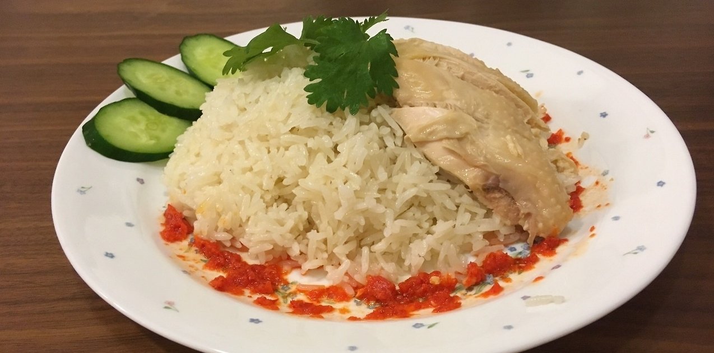
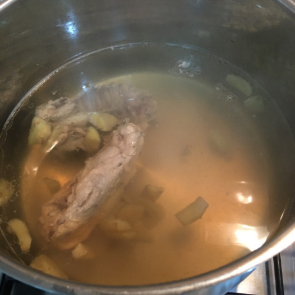
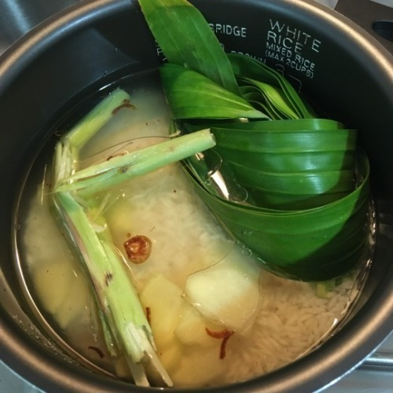

Peppery Daggerquill Rice
| 3+ hours | 3+ hours | 4 |

The only way to obtain a more authentic version of this classic
Singaporean Hainanese chicken rice dish would be to interrogate
a poor hawker the same way Ignis questioned Caligo.
Warning: this recipe is not for the faint of heart!
Warning: this recipe is not for the faint of heart!
FOR RICE & CHICKEN
|
|
for condiments/garnish
|
Optional
|
to make the rice & chicken
- Let’s set the stock to boil! Blanch the chicken bones with some hot water, then set it to boil with the mashed ginger.

Step 1: Blanching the chicken bones
- Meanwhile, slice the shallots. Put them on a paper towel so that the juices soak out of the shallots.
- Heat the cooking oil in a pan, and throw in the shallots. Make sure all the shallots are covered by the oil, and turn the heat down to low.
- The moment the shallots turn brown, turn off the heat and let it sit for a minute. This ensures that the shallots will not burn.
- Separate the shallots from the shallot oil. Do not throw away either. We will only use the shallot oil, but the fried shallots are good as an additional garnish. Some chicken rice stalls will boil up some baby bok choy/xiao bai cai, and top it with oyster sauce to serve with this as a side dish.
- Put the uncooked rice in your pot, and instead of water, use the chicken stock that you have made to fill the pot to a height of around the first joint of your index finger, around 1.9 cups (450mL).
- Next, twist the lemongrass till it breaks, tie the pandan into a knot, and put both in the pot, along with the sliced ginger and 5 tbsp (75mL) of the shallot oil. You will have to remove the lemongrass and pandan after the rice cooks.

Step 7: Adding the lemongrass, pandan, ginger and shallot oil
- Alright, it’s time for the chicken (with skin on)! Season the stock with salt and WHITE pepper and then ease the chicken in. Cook on low heat for 30 mins.
- After the chicken is cooked, dunk it into the ice water for 10 mins. This is a way to ensure the outside skin is still soft, while the latent heat in the chicken cooks the rest of it.
- Take the chicken out and massage it with sesame oil!
TO MAKE CONDIMENTS/GARNISH
- Ah, the bane of my life. I thought to remove the seeds before blending the chili peppers, but maced myself terribly. Wear gloves, or just blend the whole chillies.
- Add some salt and sugar to taste to the blended chili peppers.
- Render the chicken fat until you get some chicken oil. (Basically, just add a little water to the chicken fats in a pan, and cook until the fats and skin get crispy. The rest of the stuff in the pan will be chicken oil.)
- Heat up the chicken oil until it sizzles, and pour it into the blended chili peppers and mix well! This is the chili sauce.
The following condiments are not shown in the picture, but
you might want to make the ‘holy trinity’ of ginger/soy sauce, dark
soy sauce, and chili sauce from above for the full chicken rice
experience!
- (Optional) Mix the minced ginger with the regular soy sauce and a splash of sesame oil.
- (Optional) Get the right type of dark soy sauce. Must be thick! (A recommended soy sauce is the Lee Kum Kee Premium Dark Soy Sauce. You might be able to buy it here.)
- (Optional) You can also take some of the stock to drink with your meal! Chicken rice stalls will also give it to you sometimes.
- Now for the plating! I cheated and used just the breast to plate mine so it would look neater, but we attacked the rest of the chicken indiscriminately later. Cut the chicken as neatly as you can, basically.
- Pile some rice on a plate, press the cut chicken onto it, put the cucumber slices at the side, draw a circle with the chili sauce around it, and top with a sprig of coriander.
- Enjoy your hard work and decide to never do it again and just go and eat from the masters next time.
| Creator: onionchoppingninja | onionchoppingninja | onionchoppingninja | onion_chopping | onionchoppingninjachef | Source Post |